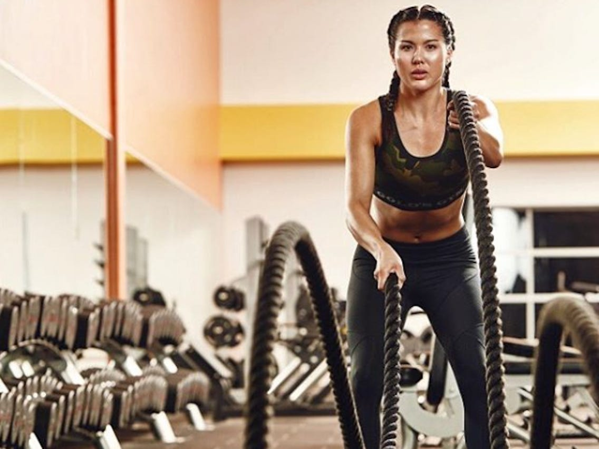

HYBRID FITNESS

Put simply, a hybrid fitness business is a facility that offers both onsite and online services. Onsite is what you offer within the four walls of your premises. Online is what you offer through live streaming or on-demand content. For the past two or three months, the best chance of survival was to move your fitness business totally online. If you can now reopen your physical premises though, you will need to operate a business model that incorporates both services.
The likelihood is that gyms will have to reopen in phases and under strict health and safety protocol. To operate safely with correct social distancing you will need to reduce class capacity and general capacity to stop the spread of the virus. Therefore you will still need to operate online classes.
One reason for this is outlined in the Association of Fitness Studios Reopening Guidelines. By continuing to offer an online service, you will be able to reduce footfall to your facility while still allowing your members the option to work out. Crucially, this will really help you retain members as you go through the challenging process of reopening. Every year for the last 14 years, the ACSM’s Health and Fitness Journal publishes its list of fitness trends for the coming year. This list is a good indicator of the direction the fitness industry is heading and is essential reading for everyone in the industry. Despite COVID-19 turning the industry on its head, some of the trends listed will still have an impact on the direction of the fitness sector.